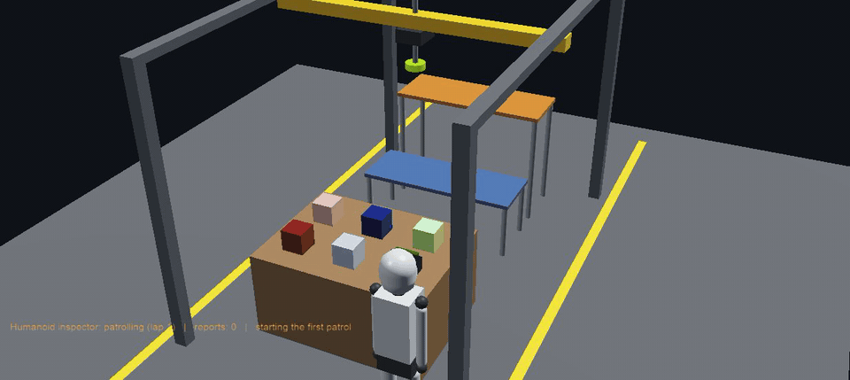
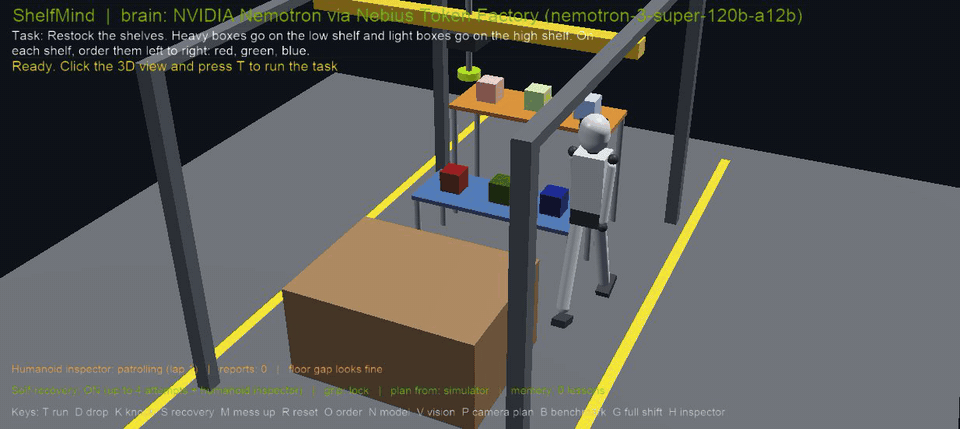
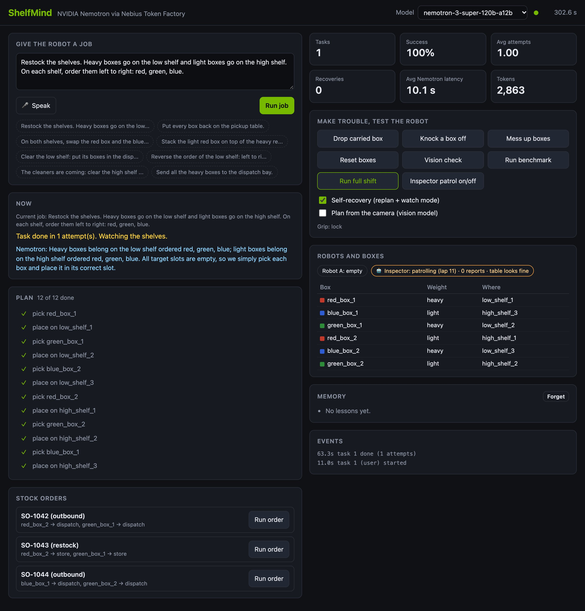

ShelfMind is a stockroom robot you instruct in plain English. NVIDIA Nemotron turns the job into a plan, the robot checks every step, and when something goes wrong it explains the problem to Nemotron and repairs it by itself.
Brain: NVIDIA Nemotron 3 Super · Served by Nebius Token Factory · Open source, MIT License
Measured in the simulator with live calls to Nemotron on Nebius Token Factory. Every plan below was written by Nemotron from plain English, with no hand-coded fallback.
The full log of the shift is public: docs/evidence/nemotron_full_shift.jsonl
A closed loop: the robot never trusts a plan blindly, and never claims success it cannot prove.
You type or speak a job. Nemotron reads it with the exact state of every box and slot, and writes a short JSON plan.
The gantry runs each step and checks the result: did the box land where it should? Is the order really done?
If a box slips or a slot is taken, the robot tells Nemotron exactly what happened and gets a new plan. Up to 4 attempts.
A humanoid inspector patrols the aisles, hears crashes, looks with its head camera and reports any change.
If a job is unclear ("put the important ones away"), Nemotron asks a question instead of guessing.
Real footage from the simulator. Nothing here is staged: the slips and knocks are triggered on purpose to test the robot.



A recording of a real run that plays right in your browser. Drag to rotate, scroll to zoom, and use the play bar to scrub through the restock, the grip failure and the humanoid's repair. Open it full screen.
The full-shift scenario strings twelve jobs and incidents together. Each step is given to Nemotron in plain English and checked against its goal afterwards.
| # | Step | What it tests | Result |
|---|---|---|---|
| 1 | Morning restock, and a box slips on the way | planning, grip-failure recovery | Pass |
| 2 | Someone bumps the low shelf | the inspector finds it, Nemotron repairs it | Pass |
| 3 | Outbound order SO-1042 | shipping to the dispatch bay | Pass |
| 4 | Customer returns SO-1043 | putting items back where they belong | Pass |
| 5–6 | Build a display stack, then take it down | stacking and unstacking | Pass |
| 7–8 | Swap red and blue, then restore the order | re-sorting with a parking spot | Pass |
| 9–10 | The stockroom gets messed up, then tidied | recovery from chaos | Pass |
| 11 | Clear the high shelf for cleaning | moving a whole shelf | Pass |
| 12 | End of day: everything back in place | the final check | Pass |
The robot's code uses the Python standard library only. No GPU needed to run it.
None of the Nemotron models on Token Factory accept images yet, so camera snapshots are read by Gemma 3; all planning, replanning and repair is done by Nemotron.
Clone the repo, add a Nebius key, open the world in Webots and press G for the full shift.